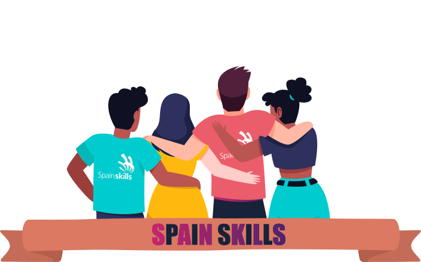

¿Hasta dónde quieres llegar?
Primera fase: Comunidad Valenciana.
El campeonato a nivel autonómico selecciona a los/las mejores alumnos/as de las diferentes especialidades de FP. Tienen como objetivo promocionar las enseñanzas de Formación Profesional, estimulando y motivando a los alumnos para mejorar la calidad de su formación.
Al mismo tiempo intenta reconocer y valorar la labor del profesorado.
Además, sirve como punto de encuentro entre empresas, profesorado y estudiantes.
Fase nacional: Madrid.
Si consigues ser el/la mejor de tu comunidad autónoma, tienes la posibilidad de prepararte para competir en las SpainSkills.
Se realizará un viaje a Madrid junto a los compañeros de cada una de las 27 modalidades.
Durante el mismo se realizarán las tres jornadas de pruebas de mayor complejidad.
Los ganadores de esta competición pasarán a formar parte de la Selección Española de FP.

Euroskills.
Esta competición es más que la competencia europea de habilidades, es una promoción espectacular de profesiones para jóvenes, con el objetivo de mostrar e inspirar la excelencia a nivel mundial en habilidades e introducir a los jóvenes en una variedad de carreras en toda Europa.
El enfoque principal de Euroskills es promover las competiciones como instrumento de promoción para un futuro cualificado e innovar en los programas de formación profesional para dar respuesta a las necesidades europeas de hoy.

WorldSkills
Es una organización no gubernamental que quiere mejorar el perfil y reconocimiento de los titulados de FP. El objetivo es mostrar la importancia de las distintas habilidades para el crecimiento económico además del éxito personal.
Pretende:
- Promover el intercambio entre jóvenes profesionales de diversas regiones del mundo.
- Intercambio de habilidades, experiencias e innovaciones tecnológicas.
- Hacer ver a los gobiernos y la industria la importajcia de la Formación Profesional.
- Sensibilizar a los jóvenes y a quienes influyen en los jóvenes sobre las oportunidades disponibles en las profesiones calificadas.